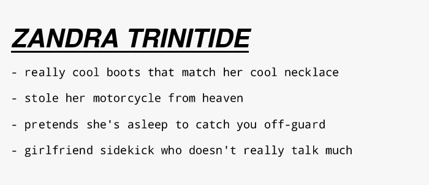 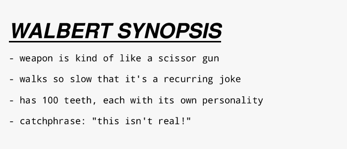 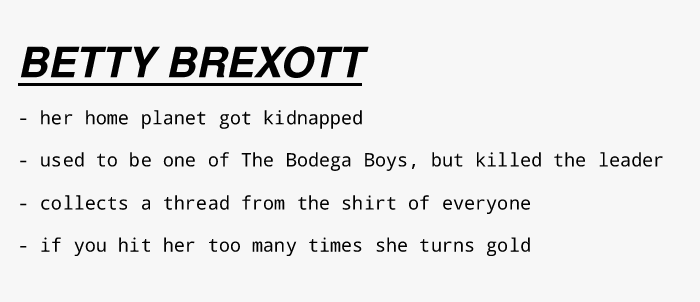 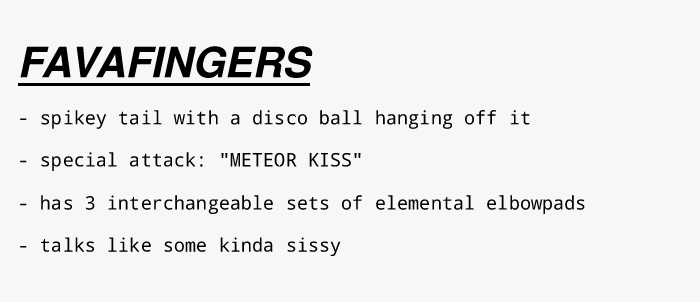 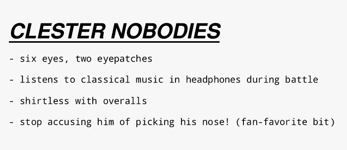 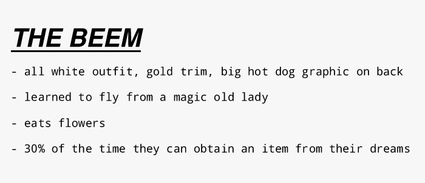  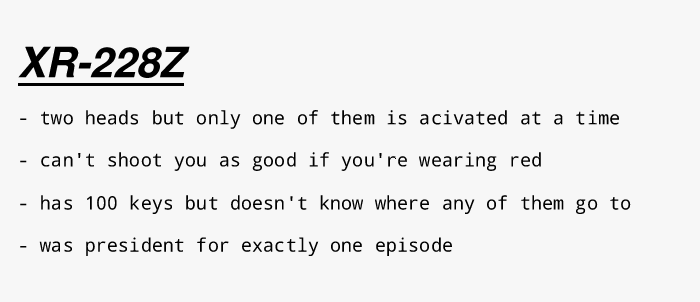       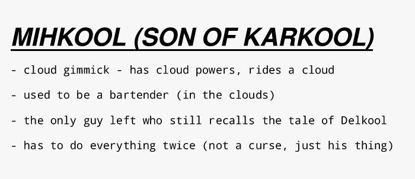  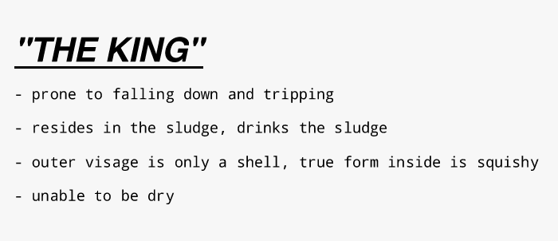 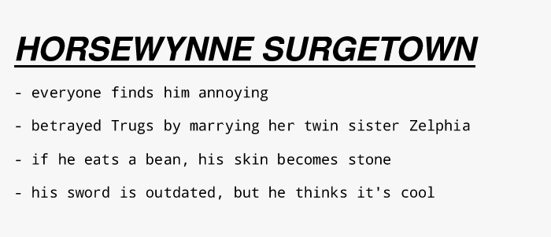 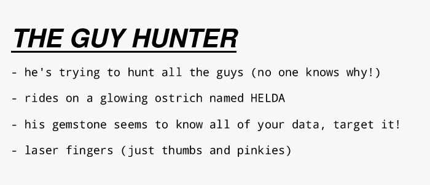 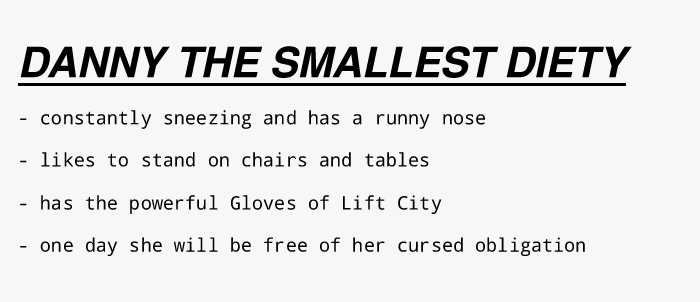  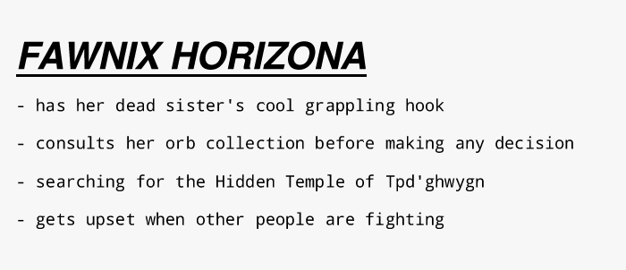 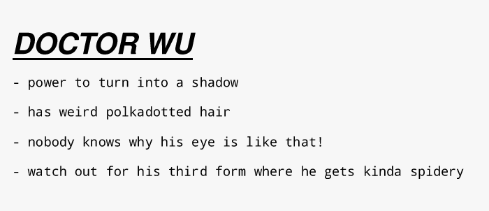  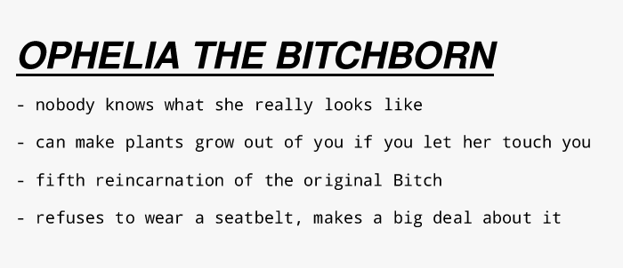   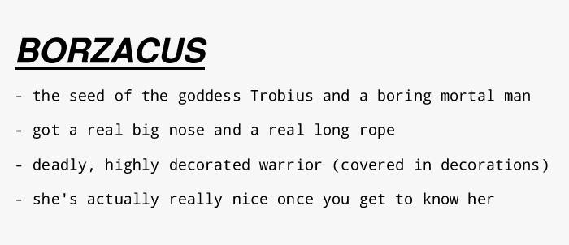 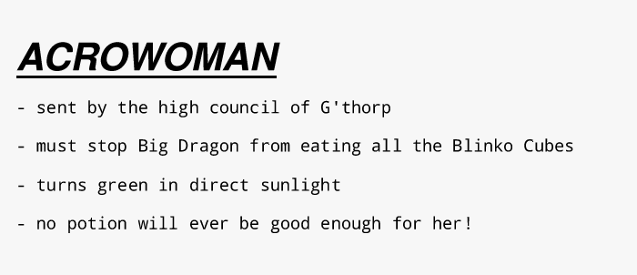 |
| ARTIST STATEMENT: In short - this is sort of a commentary on the prevalence of maximalist aesthetics-first character design in both mainstream narrative entertainment media and independant online artist communities influenced by said mainstream media. It grew out of finding myself exhausted by the constant onslaught of over-designed characters with no real justification within a work beyond "he looks cool and has a cool gimmick", which extends to independant online artists especially within the space of OCs (original characters). I hope this doesn't sound too judgey or pretentious, but sometimes I'll notice artists focus deeply on coming up with character designs under the pretense that the character fits into some hypothetical/aspirational larger work (like a video-game or animated series or comic), but those same artists won't actually make moves towards creating the larger work. They don't build skills to make a full work, they just get stuck redrawing their darling OCs over and over. This isn't necessarily a bad thing, just maybe misdirected energy? This is why I propose that "character design" for the sake of character design be considered its OWN SEPARATE ART FORM, that doesn't need the restraints of being tied to a larger narrative. TO BE CLEAR: I am speaking from DIRECT EXPERIENCE. For my entire adolescence, I had a number of "projects" that were meant to be a comic, or a video-game, etc. But really all I ever did was come up with cool aesthetics-based characters (or cool edgy aesthetic moments or conceits). I rarely thought about how these characters fit together narratively, what their real purpose was in the greater artform, or even what their personality or motivations were?? This was all very directly influenced by the mainstream media I was consuming at the time that sort of reenforced this. The name of this project comes from me commenting that my favorite childhood animated series was less-so a story and more just a collection of guys. So really this list of guys is me making fun of my past self more than anything (the original version of the collection included a bunch of OCs from my teenage years that I ended up cutting) Maybe more importantly, the trends towards maximalism in both amount of details within a character, and the amount of characters present, has made me a bit dizzy?? And believe me! I could be described as a maximalist! But as we get deeper into the horrors of the present and I get deeper into my own adulthood, I'm starting to question -- is maximalism unsustainable?? Where are the limitaitons? At what point do you stop? At what point have we received enough detail? Are you ever truly restrained from adding yet another cool-looking guy to the plot at any given moment? Who's going to stop you? What truly grounds your work, if it can literally be ANYTHING and EVERYTHING? In a way, maximalist character design feels very similar to the capitalist horror of infinite growth. Continuing to inflate, upgrade, and expand until everything is eaten. Which makes sense, because it grew from entertainment industries interested in making profit. More cool guys = more action figures, more trading cards, more content that can be pumped out without much thought. More cool guys = more things for children to buy and collect. Cool guys exist to be consumed. Cool guys are colorful flashes on a screen lulling you to sleep. We can extend this beyond character and think about maximalism in story, in lore, in visuals, in what's depicted. Just as we've gotten more and more graphical resolution thanks to technological advancements, we're getting greater and greater world-building resolution and honestly I don't know that I want it?? I don't need to know your side-character's middle school bully's name. I don't need to know the name of every bridge over every river in your little world. I don't need to see every blade of grass on an HDTV. When does the audience get space to breathe and conjure their own imagination? Leave me some blanks to fill in on my own. Sure, have fun coming up with all those little details, but don't tell me about em!! Let your work be low resolution! Let it be blurry and covered in dirt! So, I present to you a NEW ART FORM - character design boiled down to its essentials, christened in this, The Collection of Guys. If all you want to do is make some cool guys for the sake of making some cool guys, you no longer need to bother drawing them, or figuring out how they fit into a plot or narrative. No more need to reveal every inch of deep elaborate lore, every microscopic detail. You don't need to know how to write, animate, code, or make a pitch to a big studio in order to have your vision realized into a final product. Simply name a dude and give them their 4 most prominent traits, and you're done! Repeat until you feel satisfied with. If you're feeling bold, package your roster together into a big collection to imply their shared existence. LET THE AUDIENCE IMAGINE THE REST. What world do they live in? Is there interpersonal drama? Who's in relation with who? Do the guys fight eachother? Do they have tragic backstories? What do your dudes look like? Sound like? None of that is any of your business!! You don't even have to think about it if you don't want to! Even if you did think about it, you're not allowed to tell anyone beyond the alotted 4 traits! Don't do it! I chose to make my guys sort of action/adventure/scifi/fantasy themed because that's the world I witness the over-designed character phenomenon in the most. But there's nothing stopping you from making your guys live in a soap opera, period drama, talking animal cartoon, political thriller, stoner comedy, or anything else! Of course, if anyone wants to take my characters and make fanart, fanfiction, or hell even a whole cartoon or video-game or whatever out of them, be my guest! Use them as inspiration for your TTRPG or something I don't care. That's none of my business, I'm just here to make guys. (but do share with me if you do lol) |